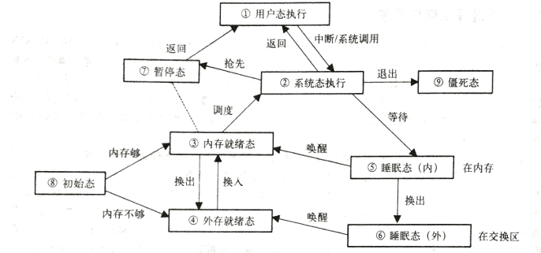

这一周为了准备OS课程的Seminar而去研究了一下Unix的进程调度，从网上的资料和我查阅的纸质资料上看，研究System V的比较多，所以我就拿System V来做例子。
需要注意的一点是，System V第一个版本是1983年发布的，Sytem V Release 4(1988)最成功的一个版本，离现在也有点久远了，*nix各种分支进化到现在和80年代比应该发生了比较大的变化，但是它们的设计思想还是值得研究一番的。
Unix启动过程
- 引导程序自举
- 引导程序完成后，系统控制权转移给Unix内核，Unix OS正式开始工作
- 内核创建0号进程
- 0号进程创建1号进程init，并将控制权交给init
- init查询当前存在的终端数，为每一个终端创建一个新的管理进程
- 管理进程等待用户登录
- 用户登录后，系统为每一个用户启动一个shell进程
- 用户输入命令，由shell进程创建新的进程
Unix进程上下文结构
- proc结构：常驻内存，记录了进程的基本信息。
- user结构：不常驻内存，在进程执行时调入内存，记录了内存的私有信息和数据。
- 正文段：程序代码和常量，可被多个进程访问的共享区域。
- 数据段：进程的私有信息，用户态进程访问的区域。
- 系统栈：进程在
系统态执行时完成子程序嵌套和中断处理时使用的信息保留区，只能被系统态进程使用。 - 用户栈：进程在
用户态执行时完成子程序嵌套和中断处理时使用的信息保留区。
0号进程三大任务
- 由核心程序创建，在初始化时完成1号进程的创立
- 在以后的管理中，负责进程的调度与分配
- 在以后的管理中，负责进程的内外存交换
Unix进程状态转换图

用户态和系统态的切换
PSW：处理器状态寄存器：反映了当前执行进程的访问方式，比如进程在何种状态下执行、中断的优先级的状态是怎样的、进入中断或陷入指令之前处理器的执行方式是怎样的等等。
进程调度程序（0号进程的switch程序）
- 对参与竞争CPU且已具备执行条件的进程进行分析和裁决
- 对选中的进程做处理器控制权移交
- 管理进程运行中各种状态的转换
- 完成进程在系统内外存之间的交换
调度算法
动态优先级多级反馈循环调度法（Round Robin With Multilevel Feedback）
- 当一个时间片结束时，系统为所有进程计算优先级
- 计算后查看是否有优先级高于当前进程且处于“内存就绪”的进程，将它们选出
- 将选出的进程设置调度标志
- 下一轮调度开始时，调度已设置了高优先级调度标志且优先级最高的进程，让其在处理器中开始运行
优先数计算
Unix是根据优先数来判断进程调度优先级的。
优先数是进程的proc结构中的char p_pri字段，值的范围是0-127，优先数越小，优先级越高。
0-49之间的优先数是系统态进程的优先级，用户态下的进程优先级为50-127之间。
计算公式
p_pri = p_cpu / 2 + PUSER + p_nice + NZERO
- PUSER和NZERO是基本用户优先数的阈值，是系统预设的，分别是25和20
- p_cpu表示该进程最近一次占用CPU的时间，对于当前进程，每个时钟中断（注意不是每个时间片）该值加1（最大值80）。若时钟中断周期是16.6ms，则一秒内右60个时钟中断
- 新创建进程的p_cpu为0
- p_nice是用户可以通过系统调用设置的一个优先级偏移值，默认为20。超级用户可以设置其在0到39之间，而普通用户只能增大该值
一个时间片结束后，系统将每个进程的p_cpu除以2，这个过程称为衰减。
衰减过后，系统重新计算每个进程的p_pri
分析一下这条公式，系统运行时PUSER和NZERO是常数，而p_nice一般也是一个常数，所以进程优先数就取决于p_cpu。对于那些占用CPU较长时间的进程，其优先数在衰减后还是比那些最近占用CPU较短的进程大，所以其优先级会变小，反过来，那些不怎么占用CPU的进程的优先级会增加，所以会在下一次调度中被执行。这是一种负反馈调节。
优先数0-49是内核保留的优先数，当进程睡眠(阻塞)时，就会被赋予一个系统优先级(0-49)，由于比用户优先数小，所以这些进程醒来的时候（比如IO完成）能被及时处理。
调度时机的疑问
关于调度时机，是让我比较疑惑的一点，我手上的中文教材和网上的一个课件说的都是调度时机有以下两个：
- 第一种情况：当进程执行中自动放弃处理机时（比如等待I/O，或者运行结束），进行一次进程调度
- 第二种情况：当进程由
系统态转入用户态时，系统安排一次调度，这样做的意图是使那些被设置了高优先级调度标志，并且在内存中就绪的进程可以有机会抢先进入执行状态
然而在查到的外文资料里没有提到“调度时机”。
如果是以上两个调度时机，那么说明在时间片结束的时候可能没有调度发生，因为只是发生了优先数计算，那么假设有一个用户态进程在执行过程中进行了大量计算（或者死循环），既没有主动放弃处理机，也没有从系统态到用户态的转换，那么处理机就一直被它占用。
0号进程一直是系统态，如果0号进程在时间片结束、计算完优先数并设置标记以后，让之前的用户进程继续执行，是否算是一种“系统态到用户态的转换”？如果是，那么就出现了调度时机，这种时机的安排就是有效的。
虽然有这个疑问，不过调度的主要思想我已经理解，也许后面的学习中这些疑问都会被解决。
参考资料